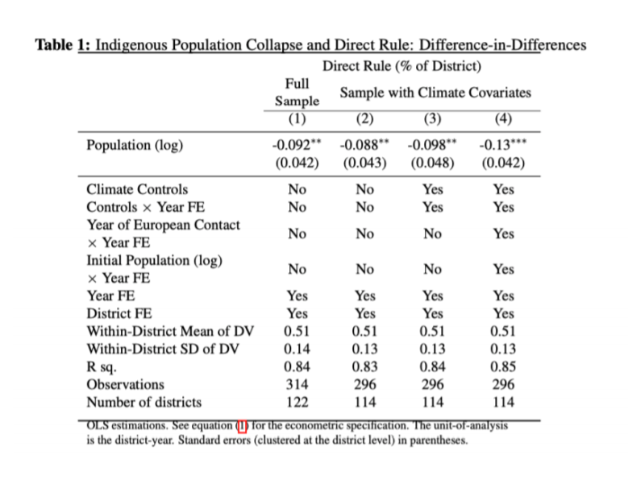
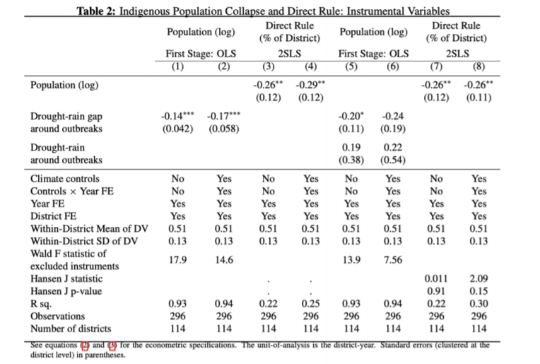
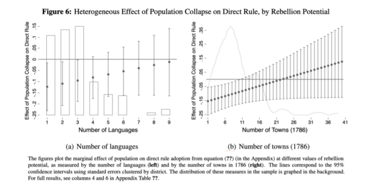
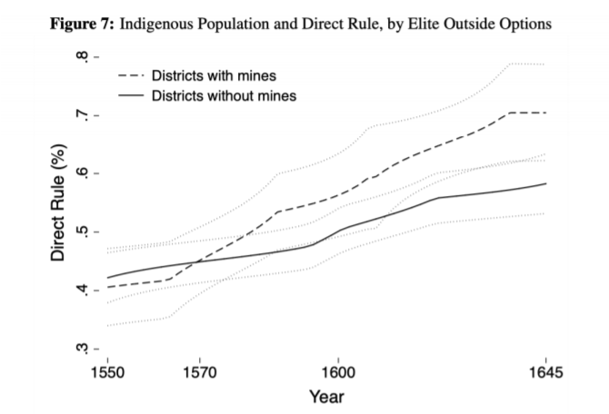

收录于合集
#国家建构与国家发展 70 个
#历史政治学 58 个
文献来源：
Garfias, Francisco, and Emily A. Sellars. “From Conquest to Centralization: Domestic Conflict and the Transition to Direct Rule.”, Journal of Politics , forthcoming(accepted May 04 2021).
作者简介：
Francisco Garfias，加州大学圣迭戈分校全球政策与战略学院助理教授；Emily A. Sellars，耶鲁大学政治学系助理教授。
有大量的研究已经说明，与间接统治相比，来自中央的直接统治和集权化管理更有助于经济增长和政治稳定。那么国家在何时、以及如何在其领土上建成集权化的直接统治结构呢？
建成直接统治的治理模式要历经许多风险，其中最重要的就是地方精英的反抗和大众的叛乱。地方精英担心在集权化改革的过程中会丧失掉原有的权力，而心怀不满的大众也将在地方政治控制转型过渡的时期看到机会。因此，本文认为，不论是中央与地方精英的冲突还是来自下层的反抗，内部冲突的威胁是影响直接统治转型的关键。
内部冲突与直接统治
在间接统治模式下，地方掌权者实际控制地方，从当地汲取相当的财富并维持一定的暴力部门，但对中央当局保持着政治忠诚。这类似于封建体系中国王和地方领主之间的关系。直接统治模式则与之不同，地方行政和军事权力都在中央当局控制之中。领取国家薪俸的公务人员代理中央在地方施行统治并可以根据相关规定予以升迁或罢黜。在当代，诸如阿富汗、索马里、缅甸、巴基斯坦和印度等国家都还依赖地方精英实行某种程度的间接统治以控制那些难以管制的地区。从间接统治向直接统治转型是国家建设取得进展的关键特征。直接统治能够直接提升国家的财税能力、信息能力，这也带到了国家在规模和职能范围上的扩张。
尽管直接统治有很多好处，但是对于许多中央决策者而言，向直接统治转型往往既不可行、又不可欲。与中央政府相比，地方精英在维持地方政治秩序、获取地方信息、压制早期的地方性叛乱上仍然有着比较优势。因而即便不部署庞大、昂贵的行政官僚体系，中央也可以依靠地方精英的服从来对那些本来难以治理的区域施行统治。如果想要在间接统治的地区重建直接统治，中央政府也将直面地方精英反抗的风险。因而在进行是否施行直接统治的决策时，中央决策者可能会面临两难困境。直接统治虽然有利于长远发展，但也增加了爆发国内冲突的风险，而且要进行昂贵的前期投资以形成一套行政体系。那么只要民众叛乱的风险仍然很高、地方精英反对直接统治的动机仍然很强，那么统治者就可能不愿也不能实行直接统治。
本文认为突然、大量的人口损失正是国家向直接统治转型的机会。首先，大量的损失削弱了地方民众叛乱的威胁。这也削弱了地方精英维持地方政治秩序的比较优势。其次，人口的损失也让地方精英的代理统治变得无利可图。这既削弱了地方精英反抗中央的物质能力，也削弱了其反抗动机。由此本文提出了四个假设：
假设一： 在出现突然且大量的人口损失时，中央政府更有可能在地方建立直接统治。
假设二： 在民众反抗的潜在风险较强的地区，人口损失对直接统治转型的促进作用也会被强化。
假设三： 在精英有其他方式获取财富的地区。人口损失对直接统治转型的促进作用更强。
假设四： 在精英有其他方式获取财富的地区，直接统治的总体水平更高。
为了验证理论假设，作者回到了16-17世纪墨西哥的历史情境，并利用双重差分和工具变量方法对假设进行了检验。
历史情境
监护征赋制（encomienda）是西班牙政府为了在美洲进行快速扩张所采用的一种间接统治模式。被赋予监护征赋权的监护人有权力从地方人口中汲取税收，但要提供地方的防务、并促进当地人转新天主教。在西班牙征服的早期，监护征赋制提供了一种将征服者和土著精英吸纳到殖民国家体系中的低成本手段。
但是对间接统治的依赖并不是没有成本的。监护人权力与自主性的膨胀威胁到了西班牙王室在当地的权威。西班牙王室早期集权化改革的尝试也都在地方精英的抵抗下告终。但在西班牙殖民统治的第一个世纪，由于外来疾病对本地土著的袭击，殖民地人口损失了九成。人口的极速下跌使得地方土著反抗的风险大大下降了，而镇压土著叛乱是监护征赋制正当性的重要来源。随着人口的下跌，监护人从人口中榨取的收益也急剧下降了，许多地方监护人转向农业和矿业获取财富。自17世纪起，地方监护人逐渐被王室委任的总督(corregimientos)取代。总督的薪俸直接由王室政府开支，并且可以王室的官僚体系内部进行调动升迁。此时的总督也被称为是政府集权的关键代理人。
然而，墨西哥殖民地向直接统治的转向并不是整齐划一的。在新西班牙（中墨西哥/墨西哥城）和新加利西亚（中北部墨西哥）监护征赋制在16世纪末期就几乎消失了，而在尤卡坦（东南墨西哥和尤卡坦半岛），由于地方人口并没有遭受剧烈的损失，因此监护征赋制维持到了18世纪。
实证分析
考虑到人口与政治制度之间的复杂关系，评估人口变化与直接统治转型之间的关系是极具挑战性的。墨西哥人口的急剧下跌可能和许多的地理、政治因素相关，而这些因素也可能和直接统治转型相关。为了避免这种多重解释可能造成的混乱，作者采用了双重差分和工具变量法的实证研究设计。
▪ 双重差分估计法
在满足平行趋势的前提条件下，双重差分法能够控制那些不随时间变化的地区性特征，诸如地理状况、地方文化规范等，这些因素可能既与直接统治的建立相关又和人口的大量损失相关。在回归中作者也应用了时间固定效应以控制整个殖民地范围内的时间趋势性因素。表一展示了双重差分估计的结果。因变量是给定年份中大区内采用监护征赋制的比重。自变量是人口的损失。在所有模型中人口都与因变量呈现出显著的负相关关系。这说明，人口损失导致了监护征赋制的瓦解，及向直接统治的转型。

▪ 工具变量估计法
双重差分估计的结果有力地支持了作者的理论假设。但是如果存在随时间变化且与人口变化、直接统治都相关的遗漏变量，那么这一估计仍然可能是有偏的。此外，还可能存在反向因果的问题。例如，制度安排可能直接影响了人口的变化。因此，作者决定进一步使用工具变量法。
在16-17世纪的墨西哥，大规模的人口死亡主要是由于流行病。当时墨西哥所流行的传染病"cocoliztli"主要与气候相关。在降雨高于平均值的年份后，如果又迎来大旱，那么这种名为cocoliztli的传染病就容易爆发。因此作者通过其后条件与传染病之间的关联构建了关于人口损失的工具变量。作者构建了两个工具变量，一是特定地区在cocoliztli爆发前1-2年是否经历过两年以上的干旱，这是一个二分变量；二是传染病爆发前的干旱年份与之前第一个非干旱年份在干旱指数（Palmer Drought Severity Index）上的差值。与对人口的直接测量相比，这种气候性的变量很难与对直接统治的转型相关。这就在很大程度上避免了遗漏变量和反向因果带来的内生性问题。回归结构参见下表，作者的假设依然得到了验证。

由于篇幅的原因，作者并没有将对后续三个假设的实证检验悉数纳入正文（文章正文+实证结果附录117页）。我们在此截取了一些直观的实证结果，以供读者研习讨论。
 
结论
既有研究针对同一殖民体系下的多样化治理模式提供了不少解释理论。许多研究从欧洲强权的统治哲学、税收技术状况、以及初始地理人文条件来解释殖民当局对直接统治或间接统治模式的选择。然而这些理论却无法解释同一制度在同一殖民体系下不同地区的不同命运。本文强调了国内冲突威胁（既包括精英反抗也包括民众叛乱）如何影响着统治者转向直接统治的决策。只要精英反抗和民众叛乱的风险仍然很高，那么统治者更倾向于授予地方精英以财税和军事上的自主权，从而以较低的成本实现政治控制。一旦国内冲突的风险降低，例如出现了人口骤降的外部冲击事件，那么在相应地区向直接统治的转型就更为可行也更加可欲了。
统治者为何、何时以及如何集中权力、强化国家能力？对于世界上的大多数国家而言，强化国家能力仍然是政治发展过程中的挑战。许多当代的国家依然在某种程度上依赖间接统治来实现全国性的政治控制。本文从国内冲突风险的角度出发，既解释国家治理模式的动态变化，也有助于分析国家建设进程的空间差异。
编译：赵德昊 审校：杨端程 编辑：张天一